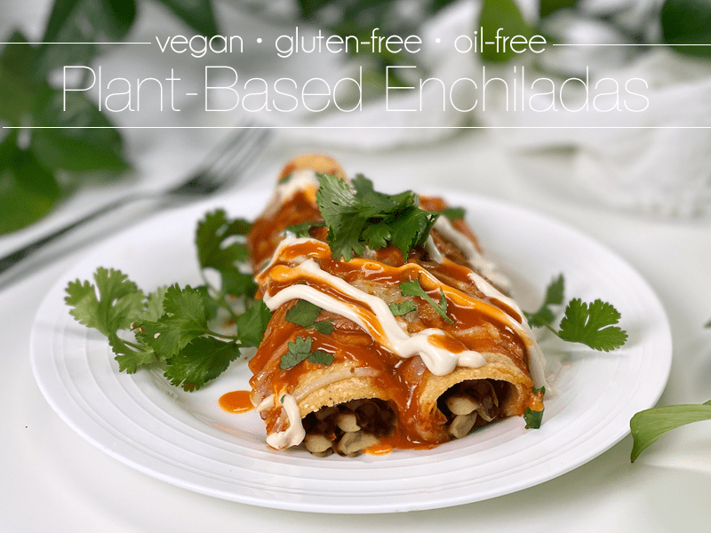
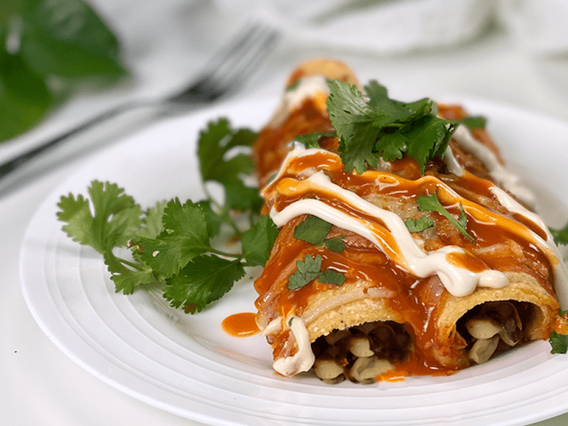
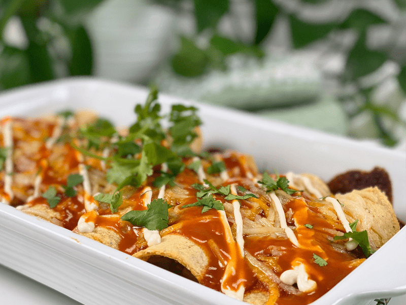
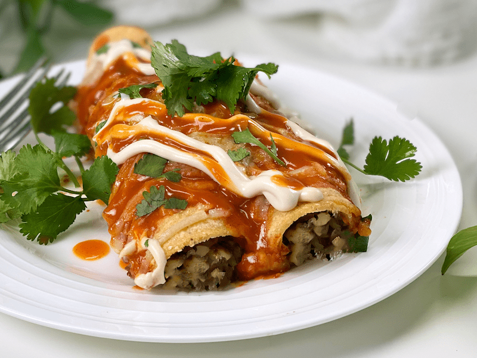
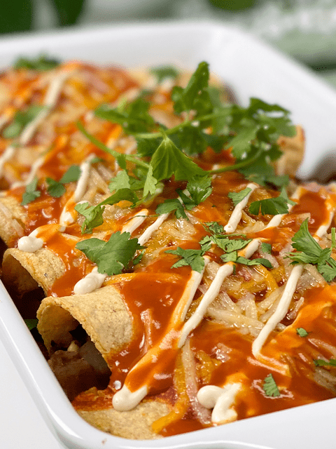
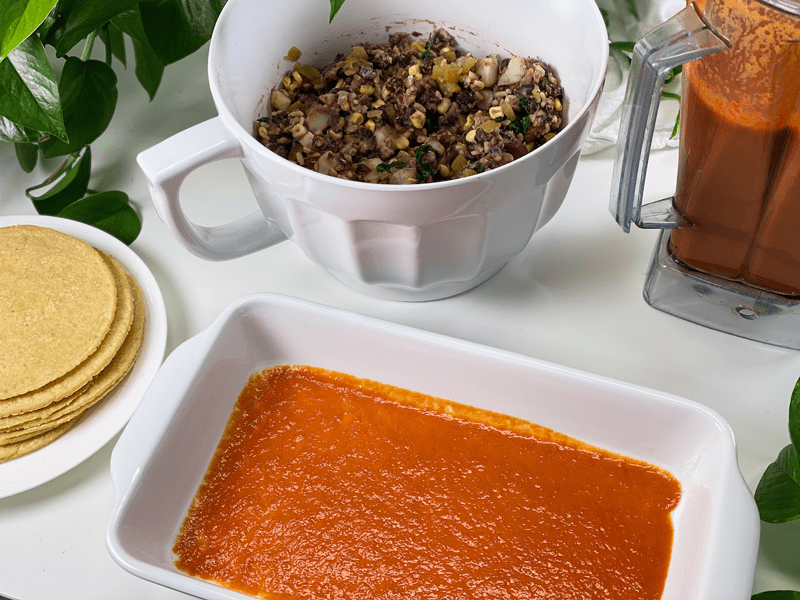
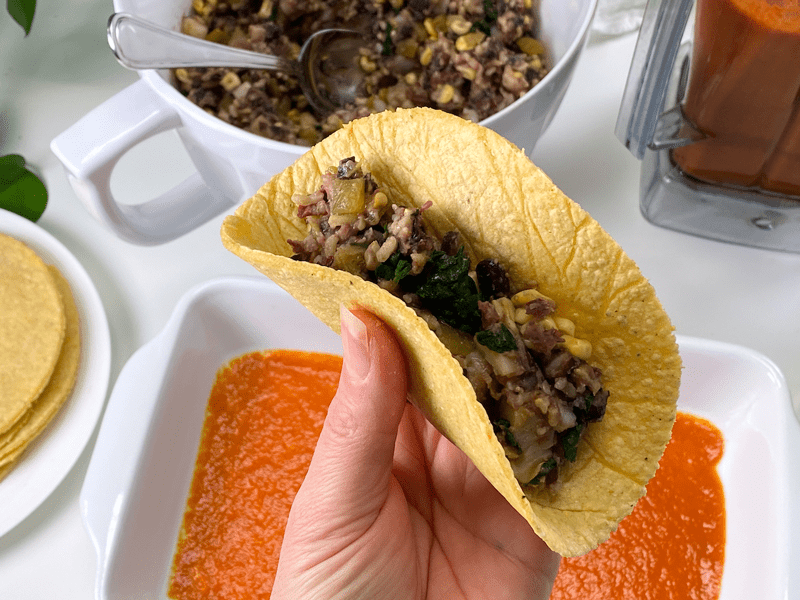
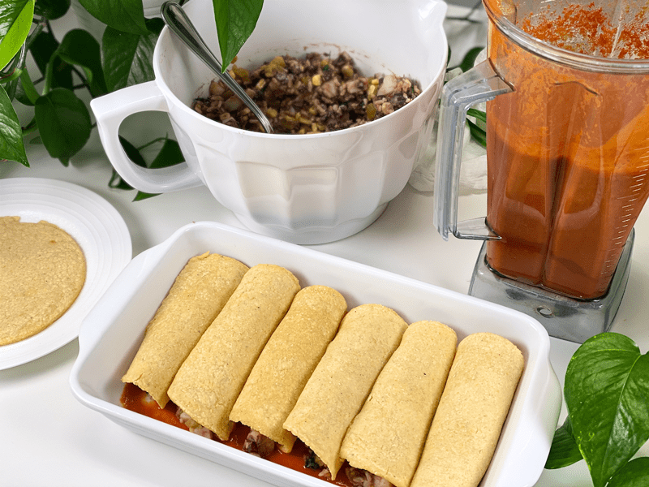
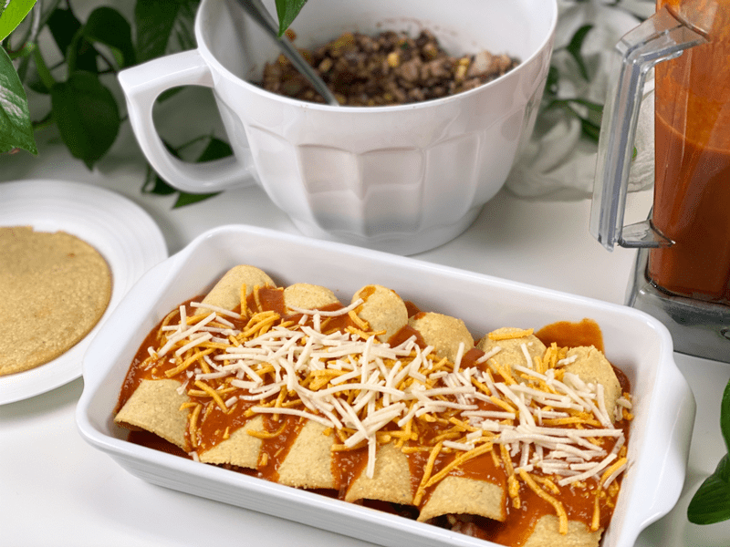
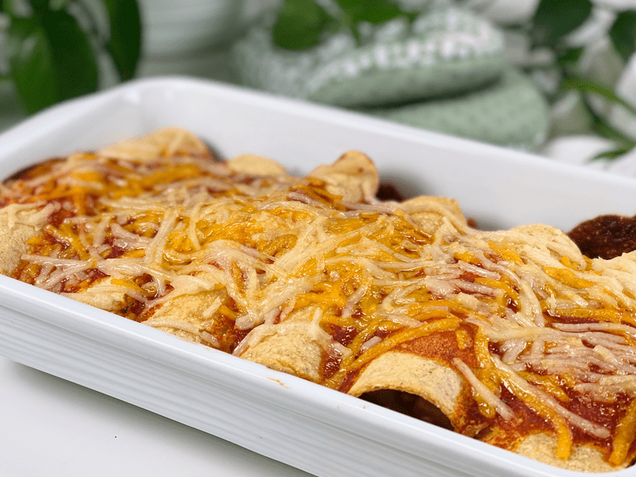

Plant-Based Refrigerator Enchiladas | Baked | Oil-Free | Vegan
Refrigerator Enchiladas? Now, what the heck am I talking about? No need to get nervous, I have a full recipe laid out for you, but I am also going to give you the freedom to think outside of the box when it comes to enchilada fillings. This recipe turned out 100% scrumptious, flavorful, nutrient-dense, and is easy to make.

For those of you who are in the Nouveauraw.com Facebook group, you will know that we have been hit by our first winter storm of the year. I have to admit, I had been looking forward to it, but in the end, many people have been suffering from power outages, loss of heat, inability to get to work, and so on. The heavy snows were followed by wind, rain, and cold. That is a recipe for disaster.
I have been spending my days clearing snow from the driveway, decks, walkways, and rewarding myself with good ol’ bobsledding adventures down the driveway. However, this morning, I woke up a tad sore, and rather than overdoing it (yet again), I honored my body with a little relaxation and good food. Besides, it rained off and on today, making the great outdoors slippery and a little dangerous, so the timing for my aches was perfect.
Unfortunately, though, I didn’t have us prepared with enough fresh produce to keep every meal vibrant with veggies, so I had to dig through my freezer and pantry. Refrigerator Enchiladas use the ingredients you have on hand. If you wish to be creative, I suggest the following formula: Use equal parts veggies to starches.
- Precooked veggies: corn, peas, mushrooms, cauliflower florets, broccoli florets, potato, onions, bell peppers, spinach, kale, onions, etc.
- Precooked starches: rice, quinoa, beans, refried beans, sweet potato, white potato, millet, etc.
- Flavorings: spices, nutritional yeast, herbs, cilantro, diced jalapeños, diced green chiles, etc.

If you follow the recipe I laid out for you, you’ll have leftovers (depending on the size of your family). Since it’s just Bob and me, I made several meals out of this. This is how I love to cook.
- Meal one – I made the standard enchilada dish using 6 tortillas. I had two, Bob had three, and another for a late-evening snack.
- Meal two – I took the same ingredients but made an Enchilada Lasagna.
- Meal three – Using the same ingredients, I made a couple of stand-alone tacos for lunch.

Enchilada Sauce
This recipe will make a lot of sauce. You will use some of it immediately as you prepare the dish to bake, and the remaining sauce will then be reduced and thickened a bit by slow cooking it on the stovetop. I like to put the excess sauce in a squeeze bottle to have at the table when serving up the enchiladas. I want to touch on a few of the ingredients used…
- Vegetable broth: Use a good-quality broth in this recipe, which will add some delicious depth of flavor to the sauce.
- Arrowroot powder: Used in this recipe as a clean thickener. I don’t recommend omitting it.
- Chili powder: Be sure to use a chili powder that doesn’t have cayenne in the ingredient list. It would make the sauce too spicy. If you want to add some heat to the dish, you can add a pinch of cayenne to the sauce, or you can bring heat in through a salsa that you can put on the dish when serving.
- Chickpea miso paste: Used in place of salt, and it adds an umami flavor to the sauce. If you don’t have any on hand, you can replace it with a 1/2-1 teaspoon of sea salt.
Corn Tortillas
- Making your own is always the best option. You control the ingredients, they are more flavorful, and they are soft right after cooking them, making them nice and pliable. I have a simple, fat-free way of making corn tortillas which can be found (here).
- Use yellow corn tortillas for this dish. White corn tortillas are more delicate and do not hold up as well as yellow corn tortillas.
Enchilada Filling
Down below, I listed everything I used in the filling, but please feel free to use what you have on hand. Open up your fridge and see if you have any precooked veggies or starches. Think of flavor, color, and texture and how they may come together in a tortilla.
- All of the veggies, as well as the brown rice, were precooked, making this dish come together quickly.
- There will most likely be leftover filling, which is perfect, because it warms up the next day for lunch.
Toppings

Tips and Techniques
Warming Corn Tortillas Before Assembly
- If you use store-bought tortillas, you will need to soften them before you start the rolling process so they don’t crack and fall apart. You decide which method works for you. I used freshly made ones, so I didn’t need to reheat mine.
- Warm for 20 or 30 seconds on a griddle, cast iron pan, or a comal if you have one.
- Wrap a stack in a clean towel and steam them using a steamer.
- Microwave: Place up to five tortillas on a microwavable plate and cover them with a damp paper towel. Microwave in 30-second bursts until they are warmed through.
Coating the Tortillas in Sauce First
- This is an option that I have done in the past but skipped today since I used freshly made tortillas. My tortillas are a bit thicker than store-bought, and since I am cooking them fresh, they are already moist.
- Covering enchiladas with sauce adds flavor and keeps them moist while cooking.

Ingredients
Yields 20 enchiladas (see above)
Enchilada Sauce
- 4 cups vegetable broth
- 1 cup roasted red bell peppers
- 1/3 cup tomato paste
- 1/4 cup arrowroot powder
- 1 Tbsp white miso paste
- 1 tsp raw apple cider vinegar
- 1 Tbsp chili powder
- 1 Tbsp onion powder
- 2 tsp garlic powder
- 1/4 tsp ground cumin
Enchilada Filling
- 1 – 15 oz can of black beans (rinsed and drained)
- 1 – 15 oz can of kidney beans (rinsed and drained)
- 2 cups small diced cooked potato
- 1 cup cooked brown rice
- 1 cup corn kernels
- 8 Tbsp (4 oz) green chilis
- 1 tsp cumin
- 1 tsp smoked paprika
- 1 tsp salt
- 1 packet frozen spinach (10 ounces) thawed and pressed dry
Additional Ingredients
Preparation
Preheat oven to 400 degrees (F).
Enchilada Sauce
- In a high-speed blender combine the vegetable broth, bell peppers, tomato paste, arrowroot, chickpea miso, apple cider vinegar, chili powder, onion and garlic powder, and cumin. Blend until smooth. Set aside.
- The sauce will be very runny during the first application. For the second application, you will heat the remaining sauce, which will cause some thickening. Any leftover sauce that is placed in the fridge will thicken perfectly.
Enchilada Filling
- In a large mixing bowl, lightly mash the beans with a fork or potato masher if you have one.
- Add in the diced potato, rice, corn, cumin, smoked paprika, and salt. Gently toss so everything gets coated with the seasonings.
- Fold in the spinach. Be sure that you chop it up into small bite-sized pieces so you don’t get a chin-slap of spinach when eating.
Assembly
- Pour 1/4 cup (or as much as needed) enchilada sauce into the baking dish and tilt it from side to side until the bottom of the dish is evenly coated.
- To assemble your first enchilada, spread roughly 1/2 cup of the filling mixture down the center of a tortilla, then snugly wrap the left side over and then the right, to make a wrap. Place it seam-side down against the edge of your pan. Repeat with remaining tortillas and filling.
- Drizzle the remaining enchilada sauce evenly over the enchiladas, leaving the tips of the enchiladas bare. Sprinkle the vegan shredded cheese evenly over the enchiladas.
- If using a saucy cheese, you can drizzle that back and forth over the enchiladas, leaving enough to add more after it is done cooking.
- Bake, uncovered, on the middle rack for 30 minutes.
- Remove from the oven and let the enchiladas rest for 10 minutes. Before serving, sprinkle chopped cilantro down the center of the enchiladas. Add more cheese if desired and a drizzle of vegan sour cream. Serve immediately.
- Store leftover in an airtight container and place in the fridge or freezer.
- Reheating: If previously chilled in the fridge, set the oven to 350 degrees (F) and bake the enchiladas for 15 to 20 minutes. If frozen, thaw out and bake for 30 to 35 minutes.
-

-
Start the process by pouring some of the enchilada sauce into the base of the pan.
-

-
Fill the tortilla from one end to the other.
-

-
Tuck and roll the tortillas and snugly line up in the pan.
-

-
Top with more sauce and vegan cheese.
-

-
Bake for 30 minutes.
-
-
Add more sauce, vegan sour cream, and whatever topping you have on hand.
© AmieSue.com